2025 Higher Physics - Paper 2 marking instructions
Source: Scottish Qualifications Authority (SQA) / Qualifications Scotland. This is a StemInteract HTML companion, not an official HTML edition. Selectable text is supplied alongside original page images. Use the images or original PDF for equations, powers, fractions, vector notation, tables and diagrams; text extraction cannot fully preserve mathematical layout.
Jump to a question
PDF page 1
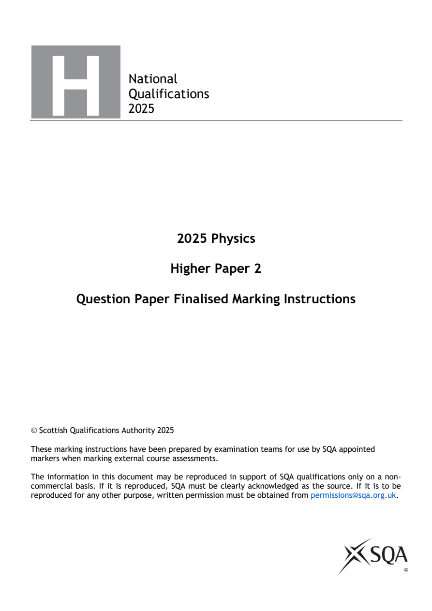
Selectable page text
National
Qualifications
2025
2025 Physics
Higher Paper 2
Question Paper Finalised Marking Instructions
© Scottish Qualifications Authority 2025
These marking instructions have been prepared by examination teams for use by SQA appointed
markers when marking external course assessments.
The information in this document may be reproduced in support of SQA qualifications only on a non-
commercial basis. If it is reproduced, SQA must be clearly acknowledged as the source. If it is to be
reproduced for any other purpose, written permission must be obtained from permissions@sqa.org.uk.PDF page 2
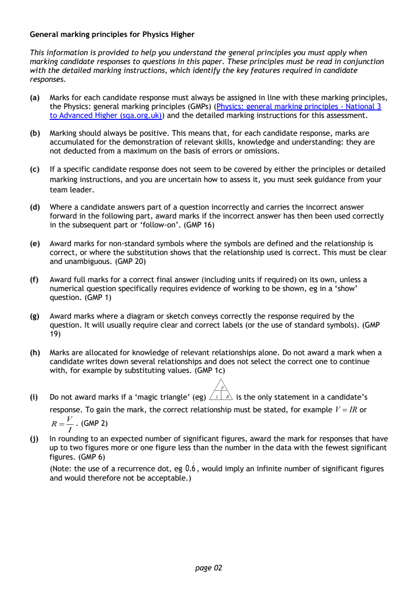
Selectable page text
General marking principles for Physics Higher
This information is provided to help you understand the general principles you must apply when
marking candidate responses to questions in this paper. These principles must be read in conjunction
with the detailed marking instructions, which identify the key features required in candidate
responses.
(a) Marks for each candidate response must always be assigned in line with these marking principles,
the Physics: general marking principles (GMPs) (Physics: general marking principles - National 3
to Advanced Higher (sqa.org.uk)) and the detailed marking instructions for this assessment.
(b) Marking should always be positive. This means that, for each candidate response, marks are
accumulated for the demonstration of relevant skills, knowledge and understanding: they are
not deducted from a maximum on the basis of errors or omissions.
(c) If a specific candidate response does not seem to be covered by either the principles or detailed
marking instructions, and you are uncertain how to assess it, you must seek guidance from your
team leader.
(d) Where a candidate answers part of a question incorrectly and carries the incorrect answer
forward in the following part, award marks if the incorrect answer has then been used correctly
in the subsequent part or ‘follow-on’. (GMP 16)
(e) Award marks for non-standard symbols where the symbols are defined and the relationship is
correct, or where the substitution shows that the relationship used is correct. This must be clear
and unambiguous. (GMP 20)
(f) Award full marks for a correct final answer (including units if required) on its own, unless a
numerical question specifically requires evidence of working to be shown, eg in a ‘show’
question. (GMP 1)
(g) Award marks where a diagram or sketch conveys correctly the response required by the
question. It will usually require clear and correct labels (or the use of standard symbols). (GMP
19)
(h) Marks are allocated for knowledge of relevant relationships alone. Do not award a mark when a
candidate writes down several relationships and does not select the correct one to continue
with, for example by substituting values. (GMP 1c)
(i) Do not award marks if a ‘magic triangle’ (eg) is the only statement in a candidate’s
response. To gain the mark, the correct relationship must be stated, for example V = IR or
V
R = . (GMP 2)
I
(j) In rounding to an expected number of significant figures, award the mark for responses that have
up to two figures more or one figure less than the number in the data with the fewest significant
figures. (GMP 6)
(Note: the use of a recurrence dot, eg 0.6, would imply an infinite number of significant figures
and would therefore not be acceptable.)
page 02PDF page 3
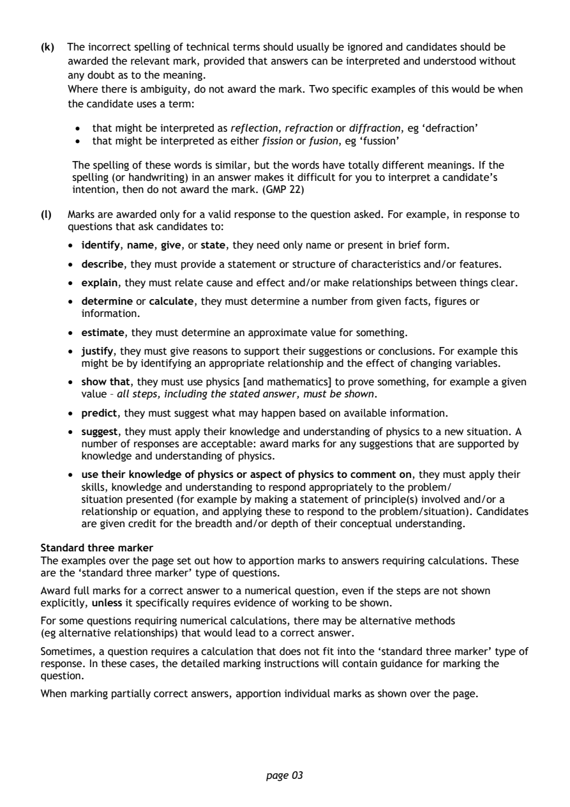
Selectable page text
(k) The incorrect spelling of technical terms should usually be ignored and candidates should be
awarded the relevant mark, provided that answers can be interpreted and understood without
any doubt as to the meaning.
Where there is ambiguity, do not award the mark. Two specific examples of this would be when
the candidate uses a term:
• that might be interpreted as reflection, refraction or diffraction, eg ‘defraction’
• that might be interpreted as either fission or fusion, eg ‘fussion’
The spelling of these words is similar, but the words have totally different meanings. If the
spelling (or handwriting) in an answer makes it difficult for you to interpret a candidate’s
intention, then do not award the mark. (GMP 22)
(l) Marks are awarded only for a valid response to the question asked. For example, in response to
questions that ask candidates to:
• identify, name, give, or state, they need only name or present in brief form.
• describe, they must provide a statement or structure of characteristics and/or features.
• explain, they must relate cause and effect and/or make relationships between things clear.
• determine or calculate, they must determine a number from given facts, figures or
information.
• estimate, they must determine an approximate value for something.
• justify, they must give reasons to support their suggestions or conclusions. For example this
might be by identifying an appropriate relationship and the effect of changing variables.
• show that, they must use physics [and mathematics] to prove something, for example a given
value – all steps, including the stated answer, must be shown.
• predict, they must suggest what may happen based on available information.
• suggest, they must apply their knowledge and understanding of physics to a new situation. A
number of responses are acceptable: award marks for any suggestions that are supported by
knowledge and understanding of physics.
• use their knowledge of physics or aspect of physics to comment on, they must apply their
skills, knowledge and understanding to respond appropriately to the problem/
situation presented (for example by making a statement of principle(s) involved and/or a
relationship or equation, and applying these to respond to the problem/situation). Candidates
are given credit for the breadth and/or depth of their conceptual understanding.
Standard three marker
The examples over the page set out how to apportion marks to answers requiring calculations. These
are the ‘standard three marker’ type of questions.
Award full marks for a correct answer to a numerical question, even if the steps are not shown
explicitly, unless it specifically requires evidence of working to be shown.
For some questions requiring numerical calculations, there may be alternative methods
(eg alternative relationships) that would lead to a correct answer.
Sometimes, a question requires a calculation that does not fit into the ‘standard three marker’ type of
response. In these cases, the detailed marking instructions will contain guidance for marking the
question.
When marking partially correct answers, apportion individual marks as shown over the page.
page 03PDF page 4
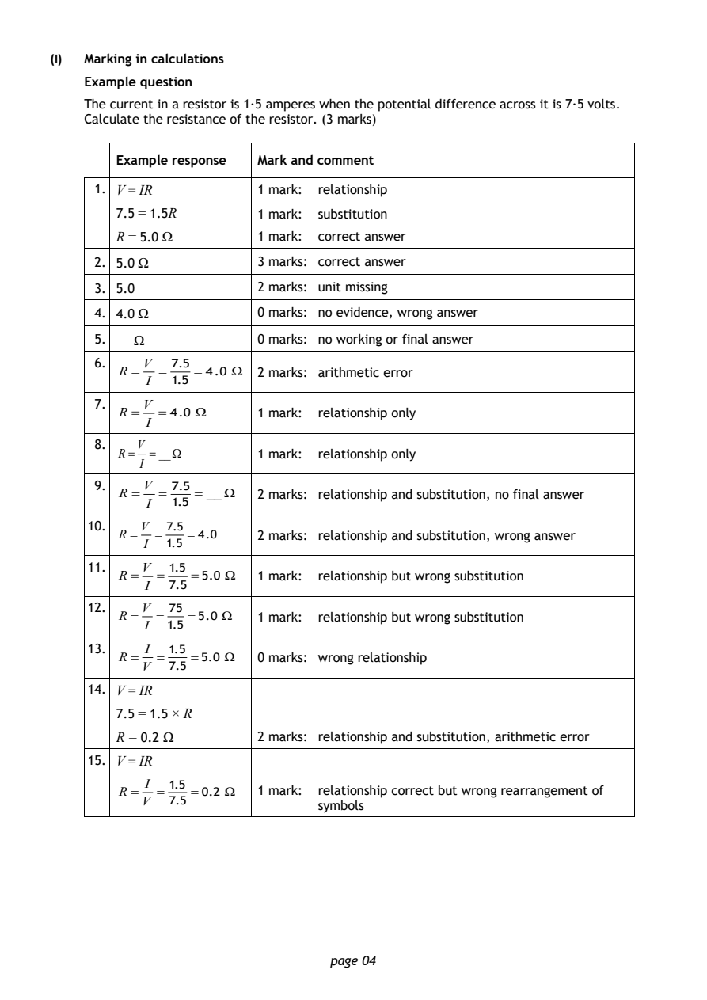
Selectable page text
(l) Marking in calculations
Example question
The current in a resistor is 1·5 amperes when the potential difference across it is 7·5 volts.
Calculate the resistance of the resistor. (3 marks)
Example response Mark and comment
1. V = IR 1 mark: relationship
7.5 = 1.5R 1 mark: substitution
R = 5.0 Ω 1 mark: correct answer
2. 5.0 Ω 3 marks: correct answer
3. 5.0 2 marks: unit missing
4. 4.0 Ω 0 marks: no evidence, wrong answer
5. __ Ω 0 marks: no working or final answer
6. V 7.5
R = = =4.0 Ω 2 marks: arithmetic error
I 1.5
7. V
R = =4.0 Ω 1 mark: relationship only
I
8. V
R= =__Ω 1 mark: relationship only
I
9. V 7.5
R = = = __Ω 2 marks: relationship and substitution, no final answer
I 1.5
10. V 7.5
R= = =4.0 2 marks: relationship and substitution, wrong answer
I 1.5
11. V 1.5
R= = =5.0 Ω 1 mark: relationship but wrong substitution
I 7.5
12. V 75
R= = =5.0 Ω 1 mark: relationship but wrong substitution
I 1.5
13. I 1.5
R= = =5.0 Ω 0 marks: wrong relationship
V 7.5
14. V = IR
7.5 = 1.5 × R
R = 0.2 Ω 2 marks: relationship and substitution, arithmetic error
15. V = IR
I 1.5
R= = =0.2 Ω 1 mark: relationship correct but wrong rearrangement of
V 7.5
symbols
page 04PDF page 5
Paper 2, Question 1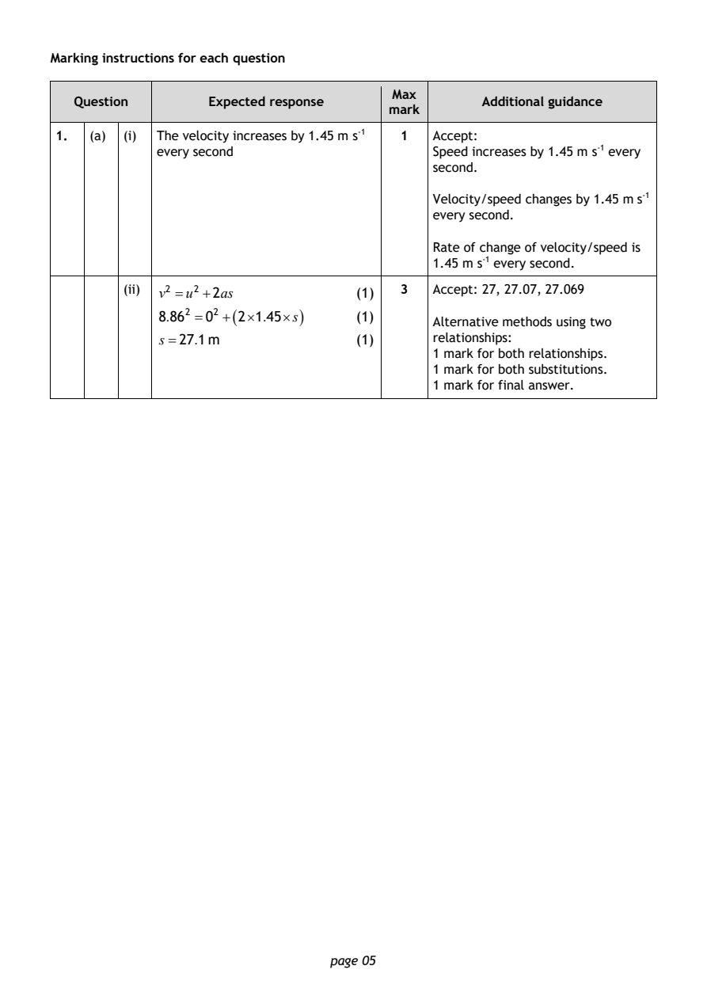
Selectable page text
Marking instructions for each question
Max
Question Expected response Additional guidance
mark
1. (a) (i) The velocity increases by 1.45 m s⁻¹ 1 Accept:
every second Speed increases by 1.45 m s⁻¹ every
second.
Velocity/speed changes by 1.45 m s⁻¹
every second.
Rate of change of velocity/speed is
1.45 m s⁻¹ every second.
(ii) v² =u² +2as (1) 3 Accept: 27, 27.07, 27.069
8.86² =0² +(2×1.45×s) (1)
Alternative methods using two
s=27.1 m (1) relationships:
1 mark for both relationships.
1 mark for both substitutions.
1 mark for final answer.
page 05PDF page 6
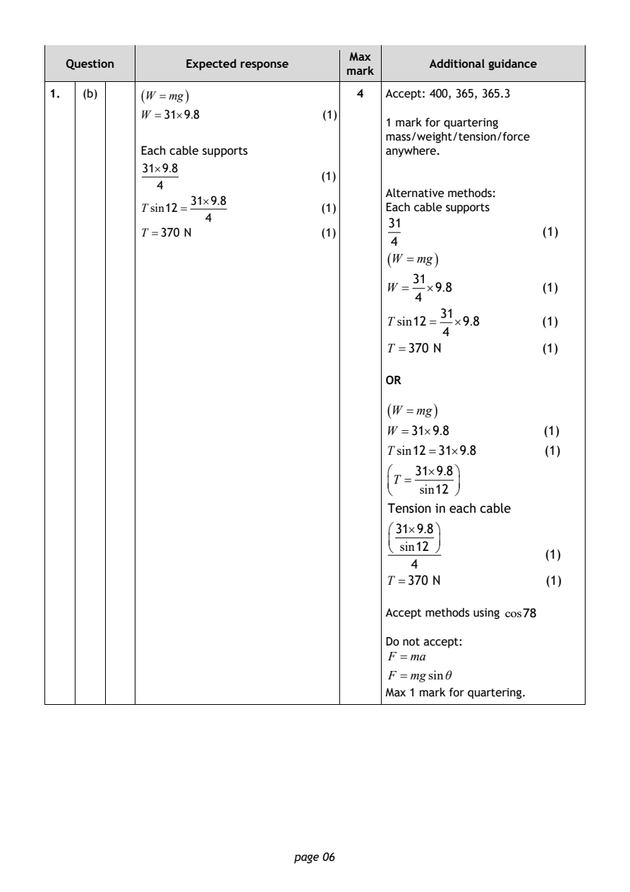
Selectable page text
Max
Question Expected response Additional guidance
mark
1. (b) (W =mg) 4 Accept: 400, 365, 365.3
W =31×9.8 (1)
1 mark for quartering
mass/weight/tension/force
Each cable supports anywhere.
31×9.8
(1)
4
Alternative methods:
31×9.8
Tsin12= (1) Each cable supports
4
31
T =370 N (1) (1)
4
(W =mg)
31
W = ×9.8 (1)
4
31
Tsin12= ×9.8 (1)
4
T =370 N (1)
OR
(W =mg)
W =31×9.8 (1)
Tsin12=31×9.8 (1)
31×9.8
T =
sin12
Tension in each cable
31×9.8
sin12
(1)
4
T =370 N (1)
Accept methods using cos78
Do not accept:
F =ma
F =mgsinθ
Max 1 mark for quartering.
page 06PDF page 7
Paper 2, Question 2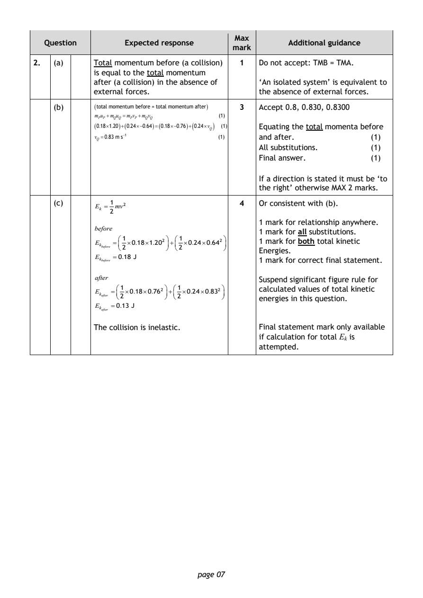
Selectable page text
Max
Question Expected response Additional guidance
mark
2. (a) Total momentum before (a collision) 1 Do not accept: TMB = TMA.
is equal to the total momentum
after (a collision) in the absence of ‘An isolated system’ is equivalent to
external forces. the absence of external forces.
(b) (total momentum before = total momentum after) 3 Accept 0.8, 0.830, 0.8300
m_{P}u_{P}+m_{Q}u_{Q}=m_{P}v_{P}+m_{Q}v_{Q} (1)
(0.18×1.20)+(0.24×−0.64)=(0.18×−0.76)+(0.24×v_{Q}) (1) Equating the total momenta before
v_{Q}=0.83 ms⁻¹ (1) and after. (1)
All substitutions. (1)
Final answer. (1)
If a direction is stated it must be ‘to
the right’ otherwise MAX 2 marks.
(c) 1 4 Or consistent with (b).
Eₖ = mv²
2
1 mark for relationship anywhere.
before
1 mark for all substitutions.
Eₖ _{b}ₑ_{f}ₒᵣ ₑ = 2 1 ×0.18×1.20² + 2 1 ×0.24×0.64² 1 E n m er a g r i k e s fo . r both total kinetic
Eₖ ₑ =0.18 J
_{b}ₑ_{f}ₒᵣ 1 mark for correct final statement.
after Suspend significant figure rule for
1 1 calculated values of total kinetic
Eₖ
ₐ_{f}ₜₑᵣ
=
2
×0.18×0.76²
+
2
×0.24×0.83²
energies in this question.
Eₖ
ₐ_{f}ₜₑᵣ
=0.13 J
The collision is inelastic. Final statement mark only available
if calculation for total Eₖ is
attempted.
page 07PDF page 8
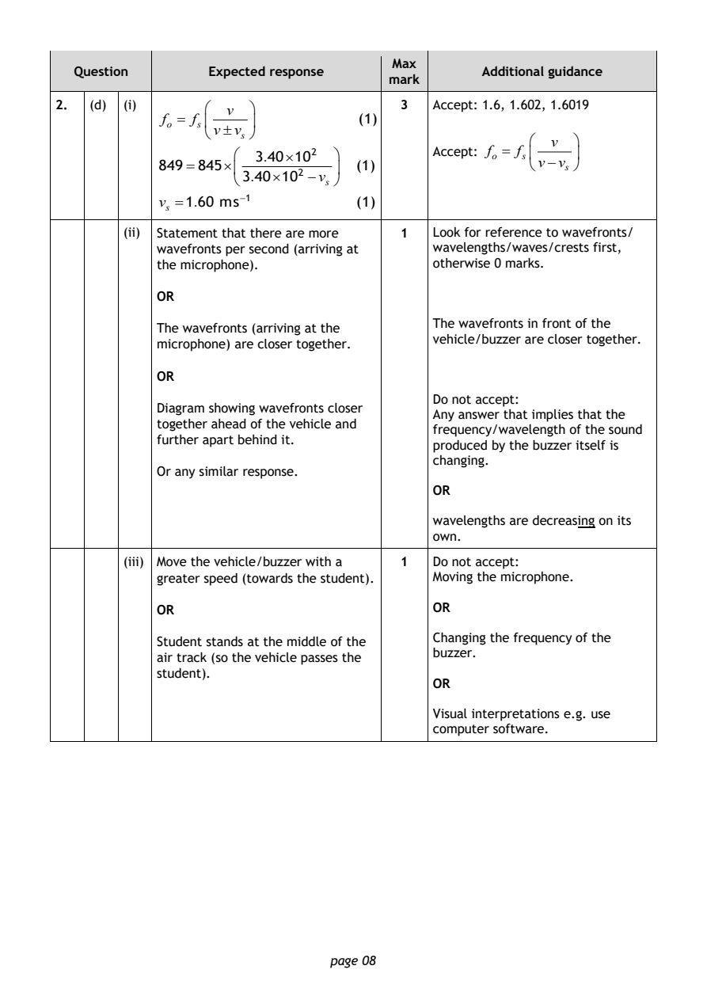
Selectable page text
Max
Question Expected response Additional guidance
mark
2. (d) (i) v 3 Accept: 1.6, 1.602, 1.6019
fₒ = fₛ (1)
v±vₛ
v
3.40×10² Accept: fₒ = fₛ
849=845× (1) v−vₛ
3.40×10² −vₛ
vₛ =1.60 ms⁻¹ (1)
(ii) Statement that there are more 1 Look for reference to wavefronts/
wavefronts per second (arriving at wavelengths/waves/crests first,
the microphone). otherwise 0 marks.
OR
The wavefronts in front of the
The wavefronts (arriving at the
vehicle/buzzer are closer together.
microphone) are closer together.
OR
Do not accept:
Diagram showing wavefronts closer
Any answer that implies that the
together ahead of the vehicle and
frequency/wavelength of the sound
further apart behind it.
produced by the buzzer itself is
changing.
Or any similar response.
OR
wavelengths are decreasing on its
own.
(iii) Move the vehicle/buzzer with a 1 Do not accept:
greater speed (towards the student). Moving the microphone.
OR OR
Changing the frequency of the
Student stands at the middle of the
buzzer.
air track (so the vehicle passes the
student).
OR
Visual interpretations e.g. use
computer software.
page 08PDF page 9
Paper 2, Question 3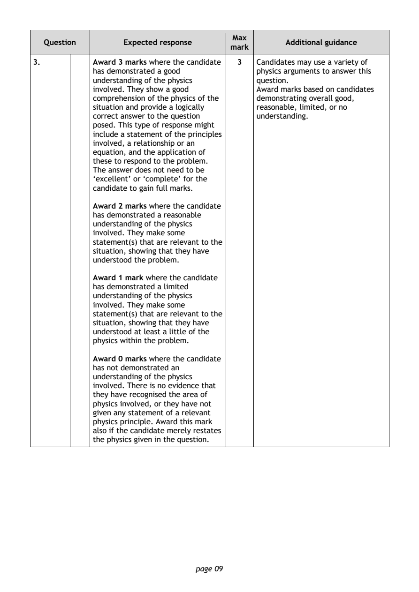
Selectable page text
Max
Question Expected response Additional guidance
mark
3. Award 3 marks where the candidate 3 Candidates may use a variety of
has demonstrated a good physics arguments to answer this
understanding of the physics question.
involved. They show a good Award marks based on candidates
comprehension of the physics of the demonstrating overall good,
situation and provide a logically reasonable, limited, or no
correct answer to the question understanding.
posed. This type of response might
include a statement of the principles
involved, a relationship or an
equation, and the application of
these to respond to the problem.
The answer does not need to be
‘excellent’ or ‘complete’ for the
candidate to gain full marks.
Award 2 marks where the candidate
has demonstrated a reasonable
understanding of the physics
involved. They make some
statement(s) that are relevant to the
situation, showing that they have
understood the problem.
Award 1 mark where the candidate
has demonstrated a limited
understanding of the physics
involved. They make some
statement(s) that are relevant to the
situation, showing that they have
understood at least a little of the
physics within the problem.
Award 0 marks where the candidate
has not demonstrated an
understanding of the physics
involved. There is no evidence that
they have recognised the area of
physics involved, or they have not
given any statement of a relevant
physics principle. Award this mark
also if the candidate merely restates
the physics given in the question.
page 09PDF page 10
Paper 2, Question 4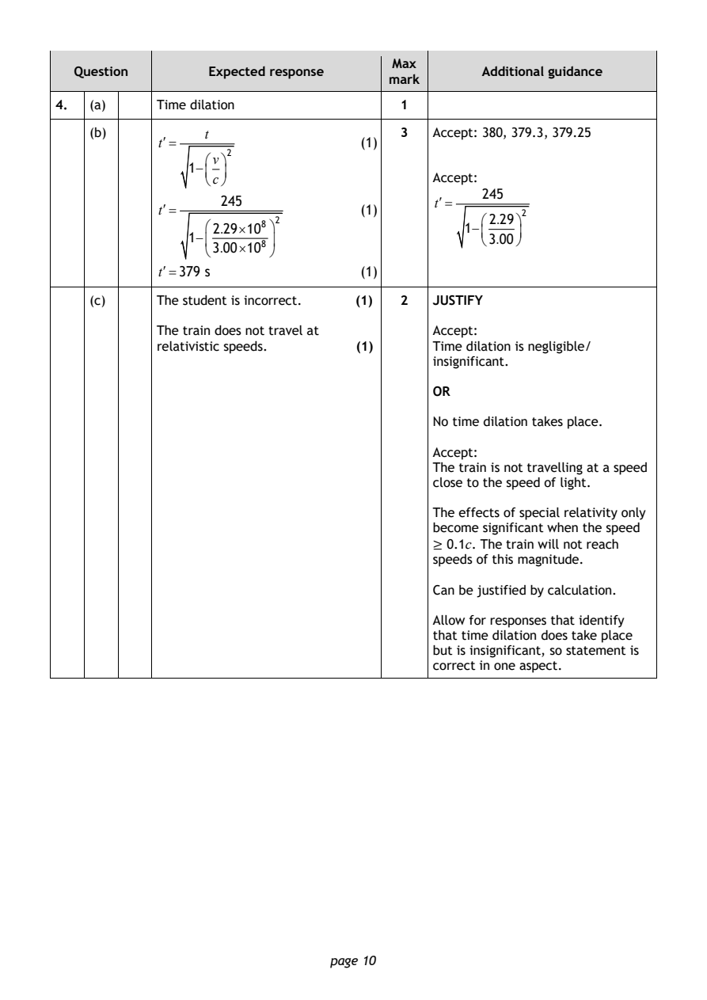
Selectable page text
Max
Question Expected response Additional guidance
mark
4. (a) Time dilation 1
(b) t 3 Accept: 380, 379.3, 379.25
t′= (1)
v²
1−
c Accept:
245
245 t′=
t′= (1)
2.29²
2.29×10⁸ ² 1−
1− 3.00
3.00×10⁸
t′=379 s (1)
(c) The student is incorrect. (1) 2 JUSTIFY
The train does not travel at Accept:
relativistic speeds. (1) Time dilation is negligible/
insignificant.
OR
No time dilation takes place.
Accept:
The train is not travelling at a speed
close to the speed of light.
The effects of special relativity only
become significant when the speed
≥ 0.1c. The train will not reach
speeds of this magnitude.
Can be justified by calculation.
Allow for responses that identify
that time dilation does take place
but is insignificant, so statement is
correct in one aspect.
page 10PDF page 11
Paper 2, Question 5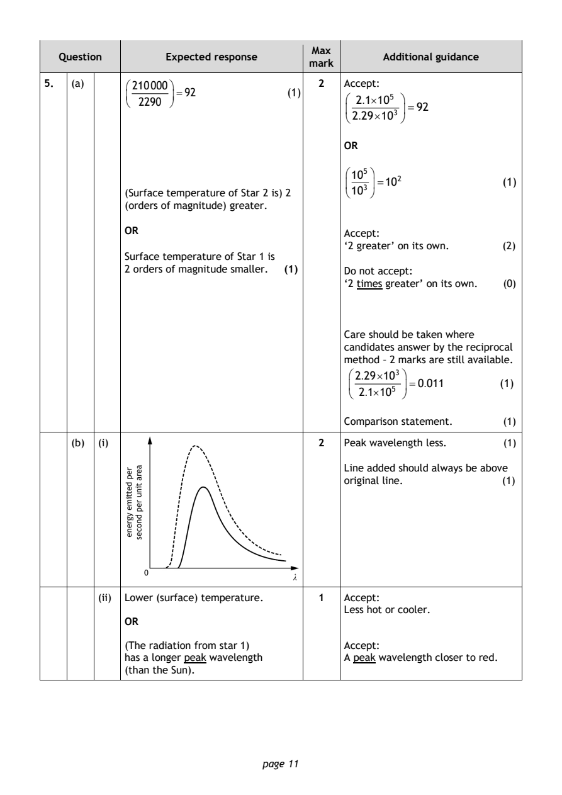
Selectable page text
Max
Question Expected response Additional guidance
mark
5. (a) 210000 2 Accept:
2290
=92 (1)
2.1×10⁵
=92
2.29×10³
OR
10⁵
=10² (1)
(Surface temperature of Star 2 is) 2 10³
(orders of magnitude) greater.
OR Accept:
‘2 greater’ on its own. (2)
Surface temperature of Star 1 is
2 orders of magnitude smaller. (1) Do not accept:
‘2 times greater’ on its own. (0)
Care should be taken where
candidates answer by the reciprocal
method – 2 marks are still available.
2.29×10³
=0.011 (1)
2.1×10⁵
Comparison statement. (1)
(b) (i) 2 Peak wavelength less. (1)
Line added should always be above
original line. (1)
(ii) Lower (surface) temperature. 1 Accept:
Less hot or cooler.
OR
(The radiation from star 1) Accept:
has a longer peak wavelength A peak wavelength closer to red.
(than the Sun).
page 11PDF page 12
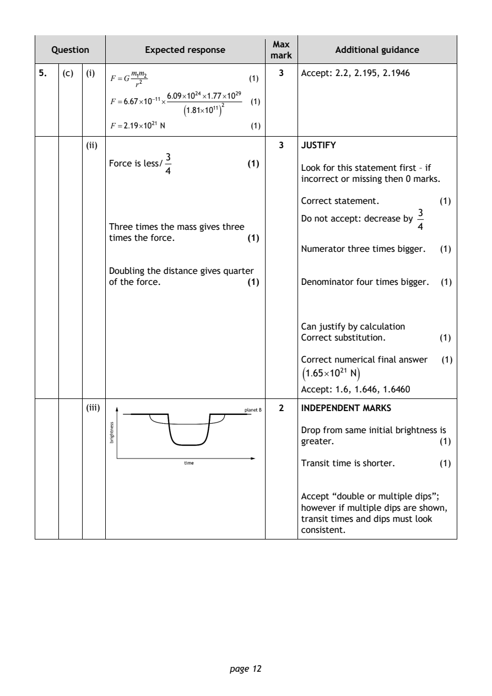
Selectable page text
Max
Question Expected response Additional guidance
mark
5. (c) (i) m₁m₂ 3 Accept: 2.2, 2.195, 2.1946
F =G (1)
r²
6.09×10²⁴×1.77×10²⁹
F =6.67×10⁻¹¹× (1)
( )
1.81×10¹¹ ²
F =2.19×10²¹ N (1)
(ii) 3 JUSTIFY
3
Force is less/ (1)
Look for this statement first – if
4
incorrect or missing then 0 marks.
Correct statement. (1)
3
Do not accept: decrease by
Three times the mass gives three 4
times the force. (1)
Numerator three times bigger. (1)
Doubling the distance gives quarter
of the force. (1) Denominator four times bigger. (1)
Can justify by calculation
Correct substitution. (1)
Correct numerical final answer (1)
( )
1.65×10²¹ N
Accept: 1.6, 1.646, 1.6460
(iii) 2 INDEPENDENT MARKS
Drop from same initial brightness is
greater. (1)
Transit time is shorter. (1)
Accept “double or multiple dips”;
however if multiple dips are shown,
transit times and dips must look
consistent.
page 12PDF page 13
Paper 2, Question 6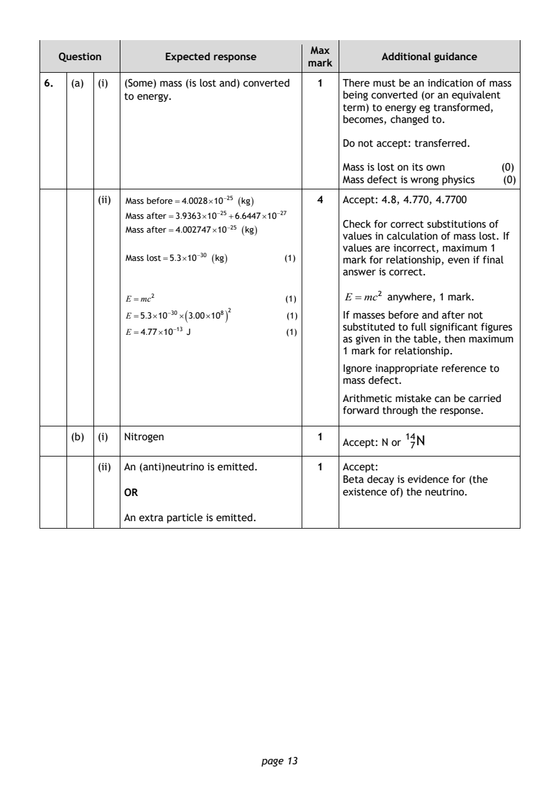
Selectable page text
Max
Question Expected response Additional guidance
mark
6. (a) (i) (Some) mass (is lost and) converted 1 There must be an indication of mass
to energy. being converted (or an equivalent
term) to energy eg transformed,
becomes, changed to.
Do not accept: transferred.
Mass is lost on its own (0)
Mass defect is wrong physics (0)
(ii) Mass before=4.0028×10⁻²⁵ (kg) 4 Accept: 4.8, 4.770, 4.7700
Mass after=3.9363×10⁻²⁵+6.6447×10⁻²⁷
Check for correct substitutions of
Mass after=4.002747×10⁻²⁵ (kg)
values in calculation of mass lost. If
values are incorrect, maximum 1
Mass lost=5.3×10⁻³⁰ (kg) (1) mark for relationship, even if final
answer is correct.
E=mc² (1) E =mc² anywhere, 1 mark.
E=5.3×10⁻³⁰× ( 3.00×10⁸ ) ² (1) If masses before and after not
substituted to full significant figures
E=4.77×10⁻¹³ J (1)
as given in the table, then maximum
1 mark for relationship.
Ignore inappropriate reference to
mass defect.
Arithmetic mistake can be carried
forward through the response.
(b) (i) Nitrogen 1 14N
Accept: N or
7
(ii) An (anti)neutrino is emitted. 1 Accept:
Beta decay is evidence for (the
OR existence of) the neutrino.
An extra particle is emitted.
page 13PDF page 14
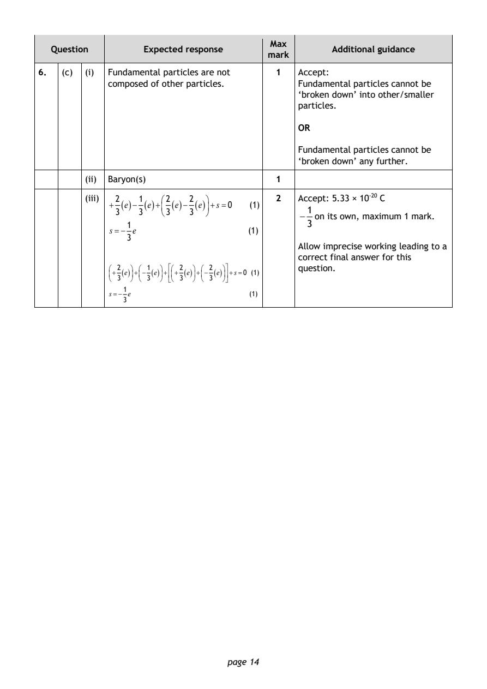
Selectable page text
Max
Question Expected response Additional guidance
mark
6. (c) (i) Fundamental particles are not 1 Accept:
composed of other particles. Fundamental particles cannot be
‘broken down’ into other/smaller
particles.
OR
Fundamental particles cannot be
‘broken down’ any further.
(ii) Baryon(s) 1
(iii) 2 1 2 2 2 Accept: 5.33 × 10⁻²⁰ C
+ (e)− (e)+ (e)− (e) +s=0 (1)
3 3 3 3
−
1
on its own, maximum 1 mark.
1 3
s=− e (1)
3
Allow imprecise working leading to a
correct final answer for this
2 1 2 2 question.
+ (e) +− (e) ++ (e) +− (e) +s=0 (1)
3 3 3 3
1
s=− e (1)
3
page 14PDF page 15
Paper 2, Question 7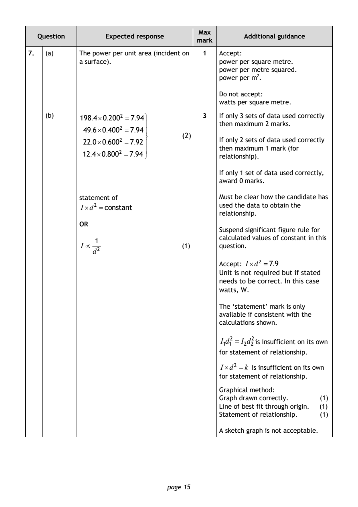
Selectable page text
Max
Question Expected response Additional guidance
mark
7. (a) The power per unit area (incident on 1 Accept:
a surface). power per square metre.
power per metre squared.
power per m².
Do not accept:
watts per square metre.
(b) 198.4×0.200² =7.94 3 If only 3 sets of data used correctly
then maximum 2 marks.
49.6×0.400² =7.94
(2)
22.0×0.600² =7.92 If only 2 sets of data used correctly
then maximum 1 mark (for
12.4×0.800² =7.94
relationship).
If only 1 set of data used correctly,
award 0 marks.
statement of Must be clear how the candidate has
used the data to obtain the
I×d² =constant
relationship.
OR
Suspend significant figure rule for
calculated values of constant in this
1
I ∝ (1) question.
d²
Accept: I×d² =7.9
Unit is not required but if stated
needs to be correct. In this case
watts, W.
The ‘statement’ mark is only
available if consistent with the
calculations shown.
I₁d₁² = I₂d₂²is insufficient on its own
for statement of relationship.
I×d² =k is insufficient on its own
for statement of relationship.
Graphical method:
Graph drawn correctly. (1)
Line of best fit through origin. (1)
Statement of relationship. (1)
A sketch graph is not acceptable.
page 15PDF page 16
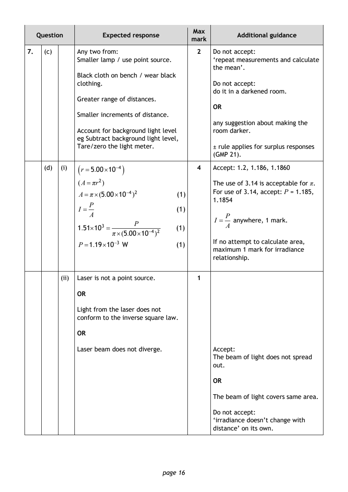
Selectable page text
Max
Question Expected response Additional guidance
mark
7. (c) Any two from: 2 Do not accept:
Smaller lamp / use point source. ‘repeat measurements and calculate
the mean’.
Black cloth on bench / wear black
clothing. Do not accept:
do it in a darkened room.
Greater range of distances.
OR
Smaller increments of distance.
any suggestion about making the
Account for background light level room darker.
eg Subtract background light level,
Tare/zero the light meter. ± rule applies for surplus responses
(GMP 21).
(d) (i) ( r =5.00×10⁻⁴ ) 4 Accept: 1.2, 1.186, 1.1860
(A=πr²) The use of 3.14 is acceptable for π.
For use of 3.14, accept: P = 1.185,
A=π×(5.00×10⁻⁴)² (1)
1.1854
I =
P
(1)
A P
I = anywhere, 1 mark.
P
A
1.51×10³ = (1)
π×(5.00×10⁻⁴)²
If no attempt to calculate area,
P=1.19×10⁻³ W (1)
maximum 1 mark for irradiance
relationship.
(ii) Laser is not a point source. 1
OR
Light from the laser does not
conform to the inverse square law.
OR
Laser beam does not diverge. Accept:
The beam of light does not spread
out.
OR
The beam of light covers same area.
Do not accept:
‘irradiance doesn’t change with
distance’ on its own.
page 16PDF page 17
Paper 2, Question 8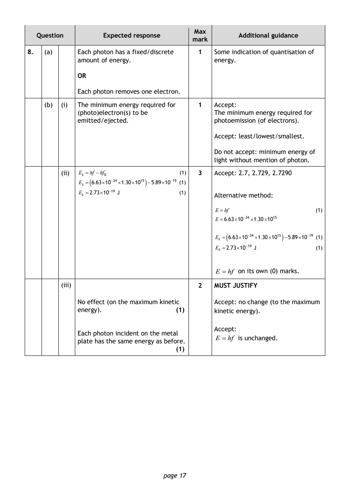
Selectable page text
Max
Question Expected response Additional guidance
mark
8. (a) Each photon has a fixed/discrete 1 Some indication of quantisation of
amount of energy. energy.
OR
Each photon removes one electron.
(b) (i) The minimum energy required for 1 Accept:
(photo)electron(s) to be The minimum energy required for
emitted/ejected. photoemission (of electrons).
Accept: least/lowest/smallest.
Do not accept: minimum energy of
light without mention of photon.
(ii) Eₖ =hf −hf₀ (1) 3 Accept: 2.7, 2.729, 2.7290
( )
Eₖ = 6.63×10⁻³⁴×1.30×10¹⁵ −5.89×10⁻¹⁹ (1)
Eₖ =2.73×10⁻¹⁹ J (1)
Alternative method:
E=hf (1)
E=6.63×10⁻³⁴×1.30×10¹⁵
( )
Eₖ = 6.63×10⁻³⁴×1.30×10¹⁵ −5.89×10⁻¹⁹ (1)
Eₖ =2.73×10⁻¹⁹ J (1)
E =hf on its own (0) marks.
(iii) 2 MUST JUSTIFY
No effect (on the maximum kinetic Accept: no change (to the maximum
energy). (1) kinetic energy).
Accept:
Each photon incident on the metal
E =hf is unchanged.
plate has the same energy as before.
(1)
page 17PDF page 18
Paper 2, Question 9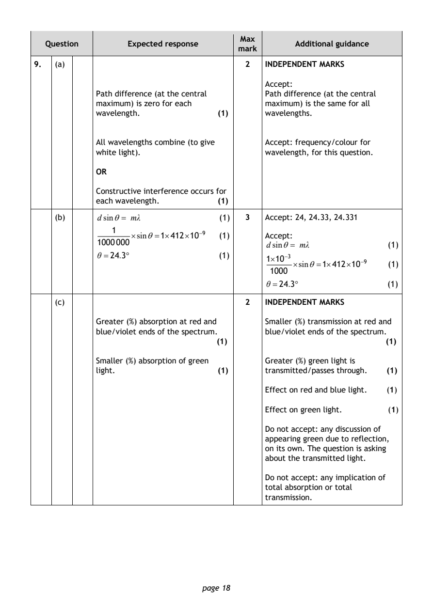
Selectable page text
Max
Question Expected response Additional guidance
mark
9. (a) 2 INDEPENDENT MARKS
Accept:
Path difference (at the central Path difference (at the central
maximum) is zero for each maximum) is the same for all
wavelength. (1) wavelengths.
All wavelengths combine (to give Accept: frequency/colour for
white light). wavelength, for this question.
OR
Constructive interference occurs for
each wavelength. (1)
(b) dsinθ= mλ (1) 3 Accept: 24, 24.33, 24.331
1
×sinθ=1×412×10⁻⁹ (1) Accept:
1000000
dsinθ= mλ (1)
θ =24.3° (1)
1×10⁻³
×sinθ=1×412×10⁻⁹ (1)
1000
θ =24.3° (1)
(c) 2 INDEPENDENT MARKS
Greater (%) absorption at red and Smaller (%) transmission at red and
blue/violet ends of the spectrum. blue/violet ends of the spectrum.
(1) (1)
Smaller (%) absorption of green Greater (%) green light is
light. (1) transmitted/passes through. (1)
Effect on red and blue light. (1)
Effect on green light. (1)
Do not accept: any discussion of
appearing green due to reflection,
on its own. The question is asking
about the transmitted light.
Do not accept: any implication of
total absorption or total
transmission.
page 18PDF page 19
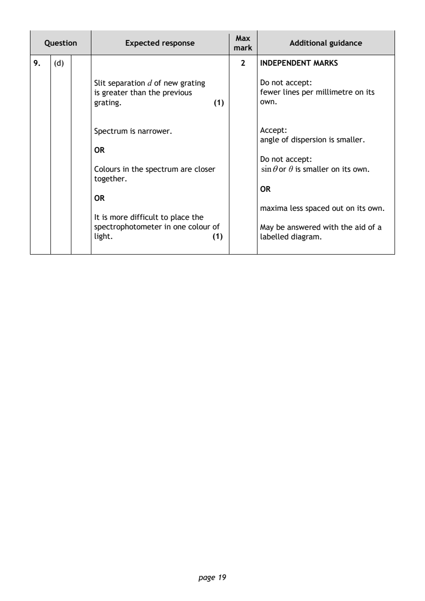
Selectable page text
Max
Question Expected response Additional guidance
mark
9. (d) 2 INDEPENDENT MARKS
Slit separation d of new grating Do not accept:
is greater than the previous fewer lines per millimetre on its
grating. (1) own.
Spectrum is narrower. Accept:
angle of dispersion is smaller.
OR
Do not accept:
Colours in the spectrum are closer sinθor θ is smaller on its own.
together.
OR
OR
maxima less spaced out on its own.
It is more difficult to place the
spectrophotometer in one colour of May be answered with the aid of a
light. (1) labelled diagram.
page 19PDF page 20
Paper 2, Question 10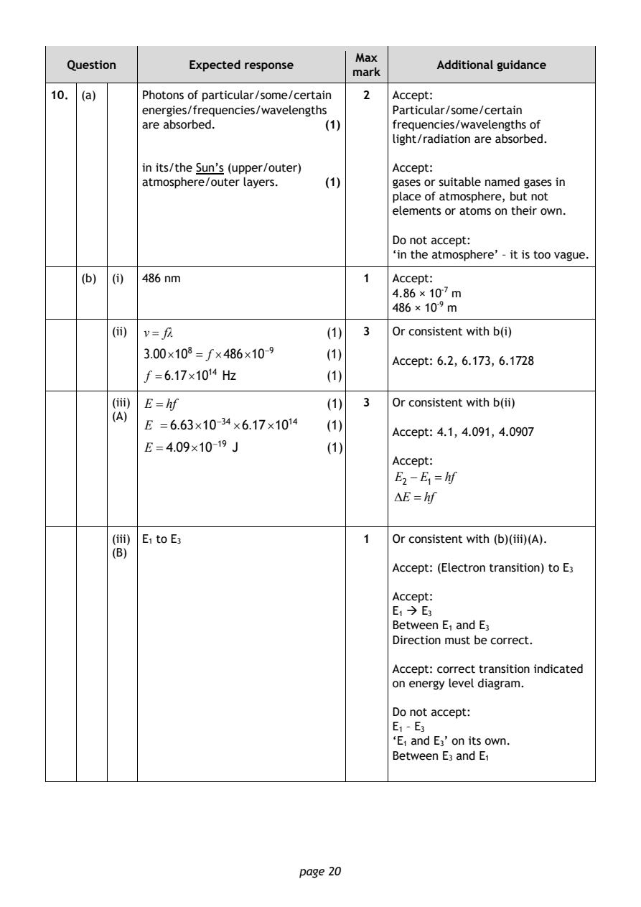
Selectable page text
Max
Question Expected response Additional guidance
mark
10. (a) Photons of particular/some/certain 2 Accept:
energies/frequencies/wavelengths Particular/some/certain
are absorbed. (1) frequencies/wavelengths of
light/radiation are absorbed.
in its/the Sun’s (upper/outer) Accept:
atmosphere/outer layers. (1) gases or suitable named gases in
place of atmosphere, but not
elements or atoms on their own.
Do not accept:
‘in the atmosphere’ – it is too vague.
(b) (i) 486 nm 1 Accept:
4.86 × 10⁻⁷ m
486 × 10⁻⁹ m
(ii) v= fλ (1) 3 Or consistent with b(i)
3.00×10⁸ = f ×486×10⁻⁹ (1)
Accept: 6.2, 6.173, 6.1728
f =6.17×10¹⁴ Hz (1)
(iii) E =hf (1) 3 Or consistent with b(ii)
(A)
E =6.63×10⁻³⁴×6.17×10¹⁴ (1)
Accept: 4.1, 4.091, 4.0907
E =4.09×10⁻¹⁹ J (1)
Accept:
E₂ −E₁=hf
∆E =hf
(iii) E to E 1 Or consistent with (b)(iii)(A).
1 3
(B)
Accept: (Electron transition) to E
3
Accept:
E → E
B¹etwee³n E and E
Direction m¹ust be³ correct.
Accept: correct transition indicated
on energy level diagram.
Do not accept:
E – E
1
‘E an³d E ’ on its own.
Be¹tween ³E and E
3 1
page 20PDF page 21
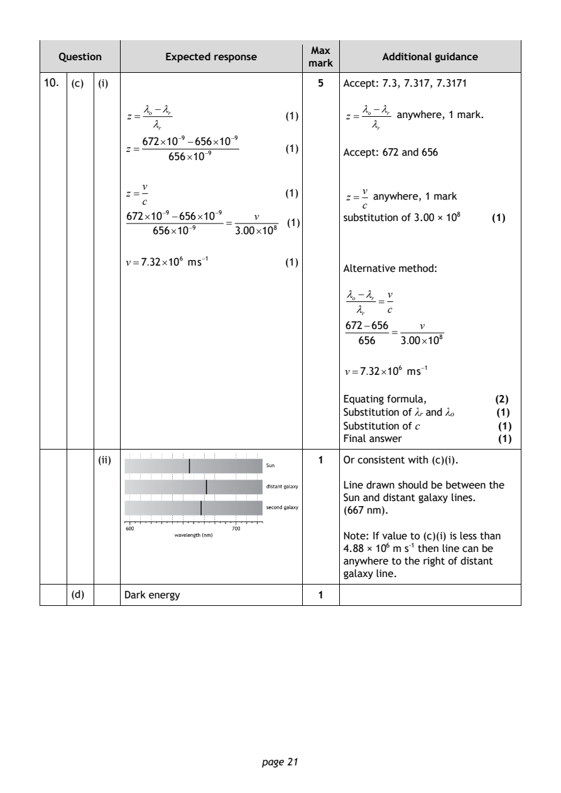
Selectable page text
Max
Question Expected response Additional guidance
mark
10. (c) (i) 5 Accept: 7.3, 7.317, 7.3171
λ −λ λ −λ
z = o (1) z = o anywhere, 1 mark.
λ ^{r} λ ^{r}
r r
672×10⁻⁹−656×10⁻⁹
z = (1)
Accept: 672 and 656
656×10⁻⁹
v
z = (1) v
z = anywhere, 1 mark
c
c
672×10⁻⁹−656×10⁻⁹ v substitution of 3.00 × 10⁸ (1)
= (1)
656×10⁻⁹ 3.00×10⁸
v=7.32×10⁶ ms⁻¹ (1)
Alternative method:
λ −λ v
o =
λ ^{r} c
r
672−656 v
=
656 3.00×10⁸
v=7.32×10⁶ ms⁻¹
Equating formula, (2)
Substitution of λ and λₒ (1)
Substitution of c^{r} (1)
Final answer (1)
(ii) 1 Or consistent with (c)(i).
Line drawn should be between the
Sun and distant galaxy lines.
(667 nm).
Note: If value to (c)(i) is less than
4.88 × 10⁶ m s⁻¹ then line can be
anywhere to the right of distant
galaxy line.
(d) Dark energy 1
page 21PDF page 22
Paper 2, Question 11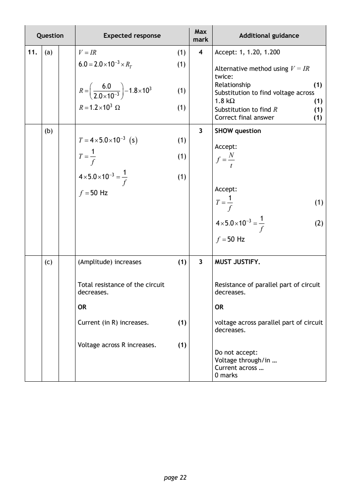
Selectable page text
Max
Question Expected response Additional guidance
mark
11. (a) V =IR (1) 4 Accept: 1, 1.20, 1.200
6.0=2.0×10⁻³×R_{T} (1)
Alternative method using V = IR
twice:
6.0 Relationship (1)
R= −1.8×10³ (1)
Substitution to find voltage across
2.0×10⁻³
1.8 kΩ (1)
R=1.2×10³ Ω (1) Substitution to find R (1)
Correct final answer (1)
(b) 3 SHOW question
T =4×5.0×10⁻³ (s) (1)
Accept:
1
T = (1) N
f
f =
t
1
4×5.0×10⁻³ = (1)
f
Accept:
f =50 Hz
1
T = (1)
f
1
4×5.0×10⁻³ = (2)
f
f =50 Hz
(c) (Amplitude) increases (1) 3 MUST JUSTIFY.
Total resistance of the circuit Resistance of parallel part of circuit
decreases. decreases.
OR OR
Current (in R) increases. (1) voltage across parallel part of circuit
decreases.
Voltage across R increases. (1)
Do not accept:
Voltage through/in …
Current across …
0 marks
page 22PDF page 23
Paper 2, Question 12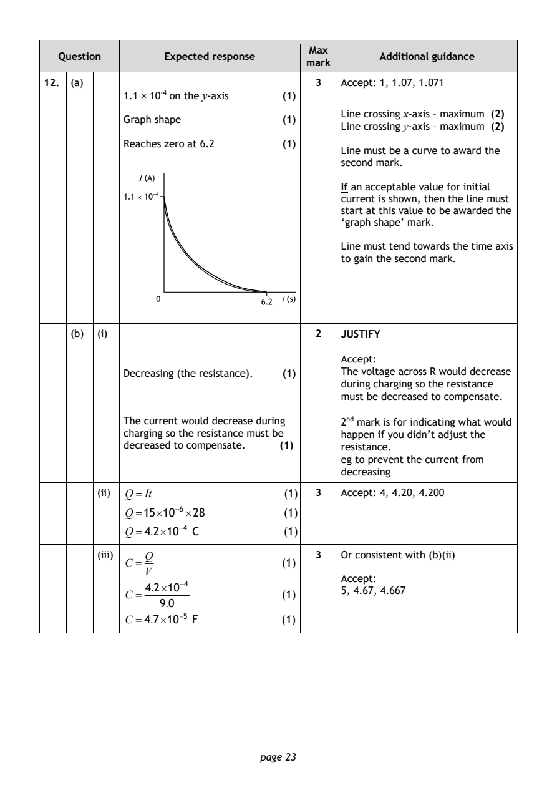
Selectable page text
Max
Question Expected response Additional guidance
mark
12. (a) 3 Accept: 1, 1.07, 1.071
1.1 × 10⁻⁴ on the y-axis (1)
Line crossing x-axis – maximum (2)
Graph shape (1)
Line crossing y-axis – maximum (2)
Reaches zero at 6.2 (1)
Line must be a curve to award the
second mark.
If an acceptable value for initial
current is shown, then the line must
start at this value to be awarded the
‘graph shape’ mark.
Line must tend towards the time axis
to gain the second mark.
(b) (i) 2 JUSTIFY
Accept:
Decreasing (the resistance). (1) The voltage across R would decrease
during charging so the resistance
must be decreased to compensate.
The current would decrease during 2ⁿ^{d} mark is for indicating what would
charging so the resistance must be happen if you didn’t adjust the
decreased to compensate. (1) resistance.
eg to prevent the current from
decreasing
(ii) Q= It (1) 3 Accept: 4, 4.20, 4.200
Q=15×10⁻⁶×28 (1)
Q=4.2×10⁻⁴ C (1)
(iii) Q 3 Or consistent with (b)(ii)
C = (1)
V
Accept:
4.2×10⁻⁴
5, 4.67, 4.667
C = (1)
9.0
C =4.7×10⁻⁵ F (1)
page 23PDF page 24
Paper 2, Question 13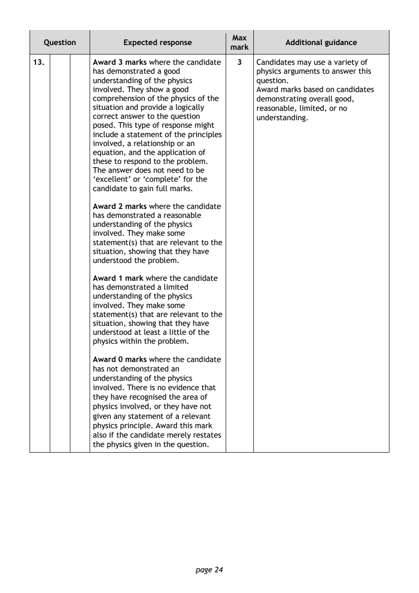
Selectable page text
Max
Question Expected response Additional guidance
mark
13. Award 3 marks where the candidate 3 Candidates may use a variety of
has demonstrated a good physics arguments to answer this
understanding of the physics question.
involved. They show a good Award marks based on candidates
comprehension of the physics of the demonstrating overall good,
situation and provide a logically reasonable, limited, or no
correct answer to the question understanding.
posed. This type of response might
include a statement of the principles
involved, a relationship or an
equation, and the application of
these to respond to the problem.
The answer does not need to be
‘excellent’ or ‘complete’ for the
candidate to gain full marks.
Award 2 marks where the candidate
has demonstrated a reasonable
understanding of the physics
involved. They make some
statement(s) that are relevant to the
situation, showing that they have
understood the problem.
Award 1 mark where the candidate
has demonstrated a limited
understanding of the physics
involved. They make some
statement(s) that are relevant to the
situation, showing that they have
understood at least a little of the
physics within the problem.
Award 0 marks where the candidate
has not demonstrated an
understanding of the physics
involved. There is no evidence that
they have recognised the area of
physics involved, or they have not
given any statement of a relevant
physics principle. Award this mark
also if the candidate merely restates
the physics given in the question.
page 24PDF page 25
Paper 2, Question 14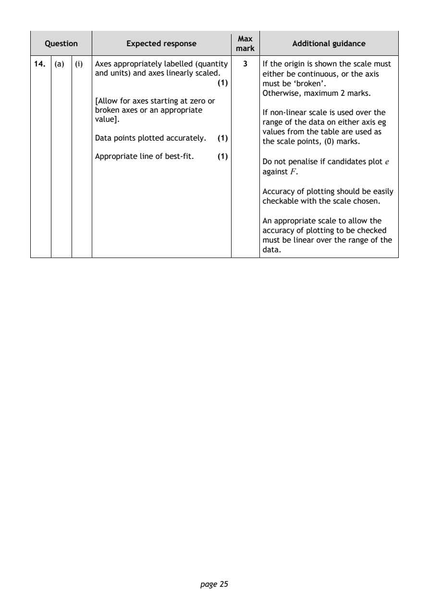
Selectable page text
Max
Question Expected response Additional guidance
mark
14. (a) (i) Axes appropriately labelled (quantity 3 If the origin is shown the scale must
and units) and axes linearly scaled. either be continuous, or the axis
(1) must be ‘broken’.
Otherwise, maximum 2 marks.
[Allow for axes starting at zero or
broken axes or an appropriate
If non-linear scale is used over the
value].
range of the data on either axis eg
values from the table are used as
Data points plotted accurately. (1)
the scale points, (0) marks.
Appropriate line of best-fit. (1)
Do not penalise if candidates plot e
against F.
Accuracy of plotting should be easily
checkable with the scale chosen.
An appropriate scale to allow the
accuracy of plotting to be checked
must be linear over the range of the
data.
page 25PDF page 26
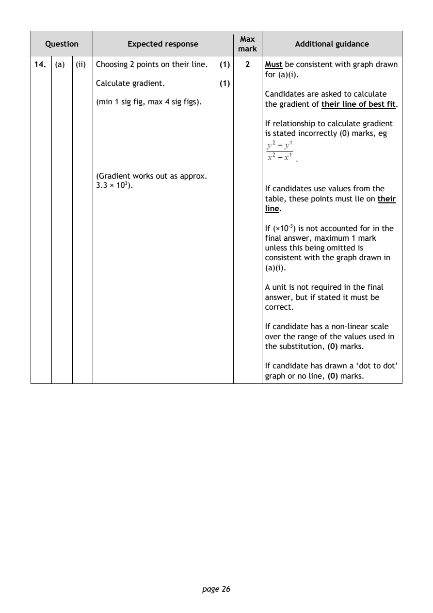
Selectable page text
Max
Question Expected response Additional guidance
mark
14. (a) (ii) Choosing 2 points on their line. (1) 2 Must be consistent with graph drawn
for (a)(i).
Calculate gradient. (1)
Candidates are asked to calculate
(min 1 sig fig, max 4 sig figs).
the gradient of their line of best fit.
If relationship to calculate gradient
is stated incorrectly (0) marks, eg
.
(Gradient works out as approx.
3.3 × 10³).
If candidates use values from the
table, these points must lie on their
line.
If (×10⁻³) is not accounted for in the
final answer, maximum 1 mark
unless this being omitted is
consistent with the graph drawn in
(a)(i).
A unit is not required in the final
answer, but if stated it must be
correct.
If candidate has a non-linear scale
over the range of the values used in
the substitution, (0) marks.
If candidate has drawn a ‘dot to dot’
graph or no line, (0) marks.
page 26PDF page 27
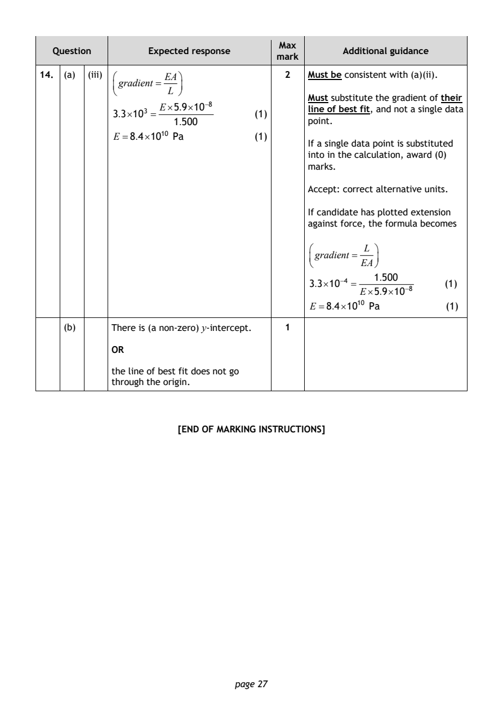
Selectable page text
Max
Question Expected response Additional guidance
mark
14. (a) (iii) EA 2 Must be consistent with (a)(ii).
gradient =
L
Must substitute the gradient of their
E×5.9×10⁻⁸ line of best fit, and not a single data
3.3×10³ = (1)
1.500 point.
E =8.4×10¹⁰ Pa (1)
If a single data point is substituted
into in the calculation, award (0)
marks.
Accept: correct alternative units.
If candidate has plotted extension
against force, the formula becomes
L
gradient =
EA
1.500
3.3×10⁻⁴ = (1)
E×5.9×10⁻⁸
E =8.4×10¹⁰ Pa (1)
(b) There is (a non-zero) y-intercept. 1
OR
the line of best fit does not go
through the origin.
[END OF MARKING INSTRUCTIONS]
page 27